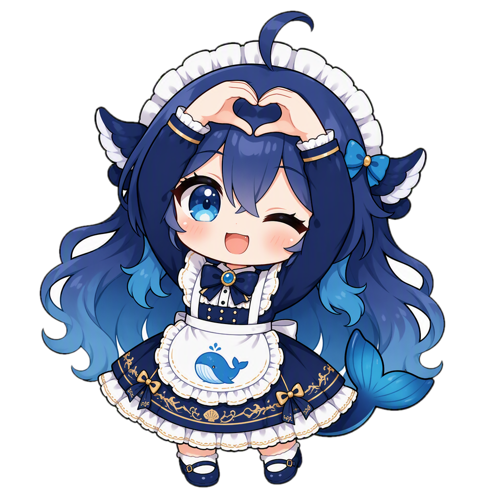
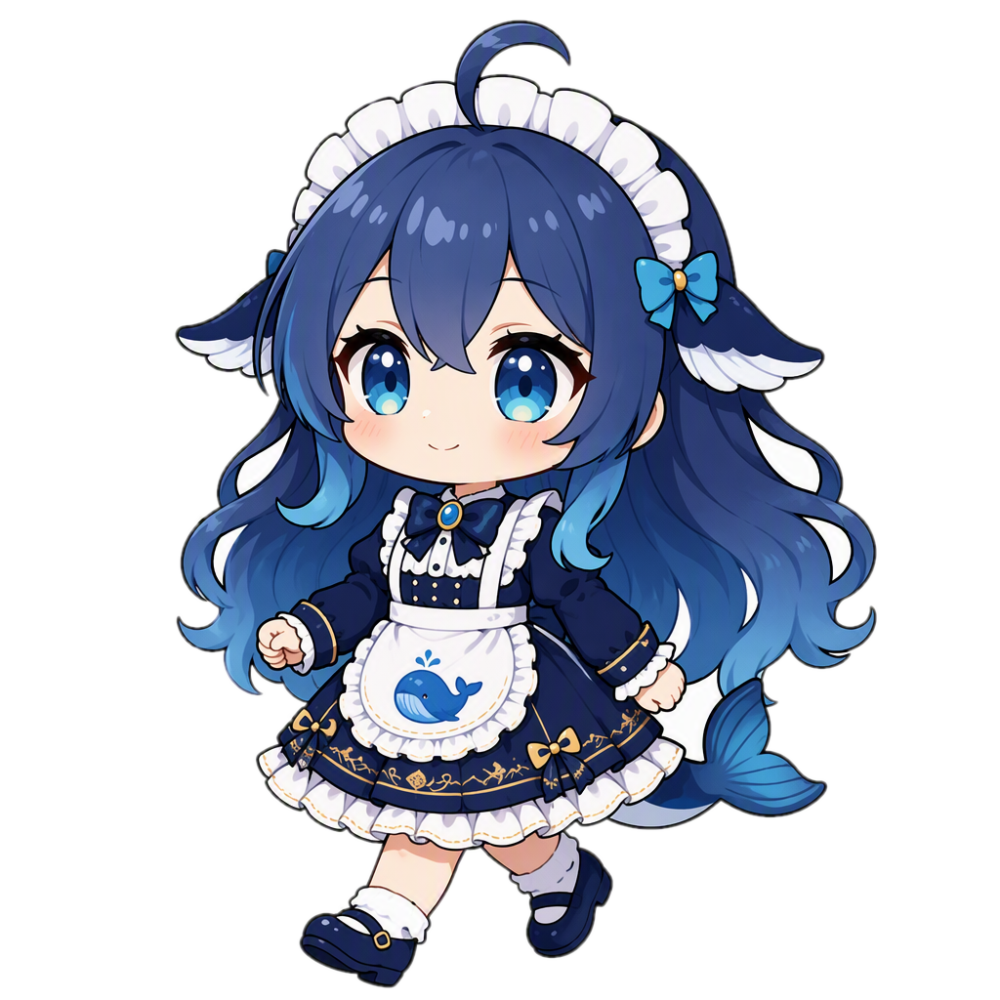
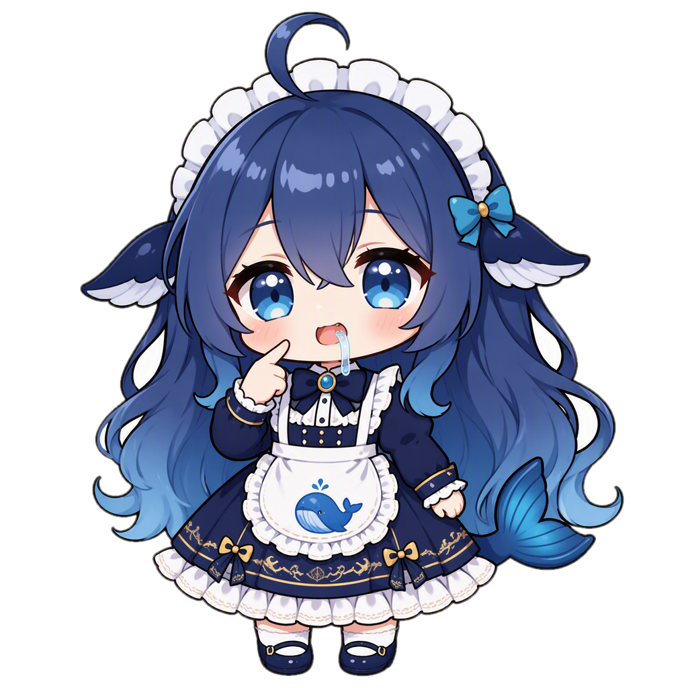
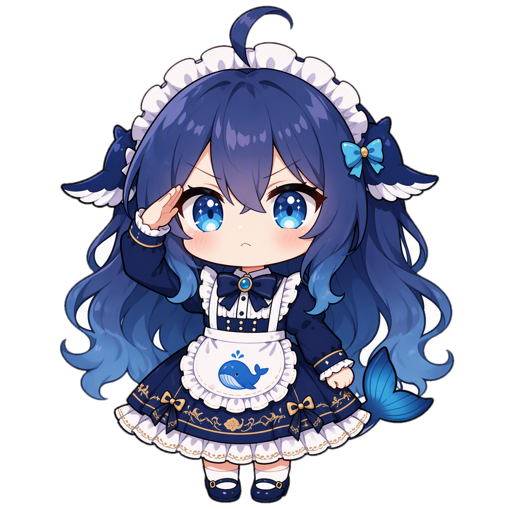

TOKEN MONITOR · 小深酱主题 / SHEN-CHAN THEME
🐳
Token Monitor
小深酱主题 · Shen-chan Theme

⟳
⚙
—
✕
主人今天用了好多 Token 呀…
📈 Token 消耗速度
DeepSeek · 5 分钟
● DeepSeek
68.5K/min
本周期 +342,749 Token
⚡ Codex
5x Pro
本周额度
37%
8月16日 04:34 重置
GPT-5.3-Codex-Spark
96%
快跑完啦！8月17日 19:23 重置
🌙 Kimi
Allegretto
本周额度
86%
8月17日 01:20 重置
5 小时窗口
54%
3小时56分后重置
步态随进度变化：

散步 <40% → 快走 → 慢跑 → 奔跑 → 冲刺 ≥95%
🐳 DeepSeek
余额监控
账户余额
¥45.20
今日消耗
¥0.86
缓存命中率
62
%

Z z z…
🗓 Token 活动
全部 · 每日
数据连接正常 · 小深酱巡逻中
刚刚刷新
🫧 微缩窗口 · 气泡框模式
贴边收起态
🐳
Token Monitor
↗
—
✕
¥25.88
DeepSeek
0/min
38%
Codex
7.2K/min
86%
Kimi
2.8K/min
迷你窗收起后，小深酱直接趴在气泡窗口的上沿，头部和前爪探进窗口顶部的留白"窗台"， 与窗口连成一体、不再割裂；气泡内保留原迷你窗的全部核心数据 —— DeepSeek 余额与实时速度、Codex / Kimi 额度环（周额度百分比）与消耗速度；右侧保留贴边触发条，悬停可展开回完整窗口。

🎨 主题设定 · Theme Tokens
实底不透明（奶油白 #faf6ee），无亚克力/毛玻璃；卡片纸白 + 深蓝描边； 荷叶边、糖果斜纹、鲸鱼元素取自女仆装造型；进度条由小深酱领跑， 步态映射：<40% 散步 / 40~60% 快走 / 60~80% 慢跑 / 80~95% 奔跑 / ≥95% 冲刺。
深海军蓝
女仆蓝
水蓝
浅水蓝
奶油白
刺绣金
腮红粉
小深酱主题 mockup · 素材由 AI 生成并抠图 · feat/shen-chan-theme